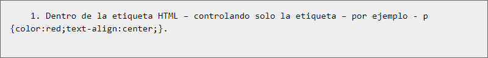
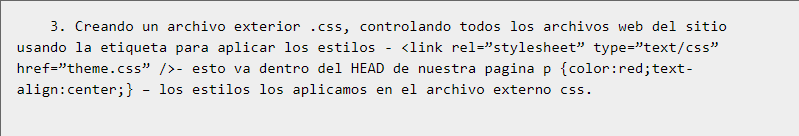
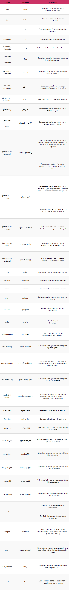
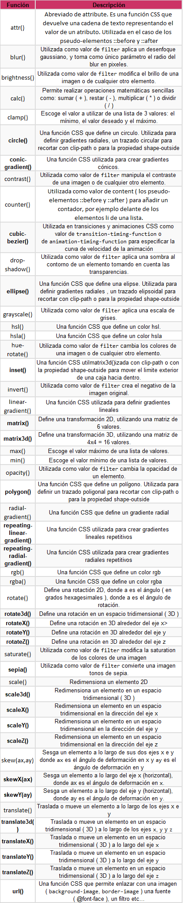

Ventajas y desventajas de css3Se obtiene un mayor control de la presentación del sitio al poder tener todo el código CSS reunido en uno, lo que facilita su modificación. Al poder elegir el archivo CSS que deseamos mostrar, puede aumentar la accesibilidad ya que podemos asignarle un código CSS concreto a personas con deficiencias visuales, por ejemplo. Esto lo detecta el navegador web. Conseguimos hacer mucho más legible el código HTML al tener el código CSS aparte (Siempre que no usemos estilos en línea, claro está). Pueden mostrarse distintas hojas de estilo según el dispositivo que estemos utilizando (versión impresa, versión móvil, leída por un sintetizador de voz…) o dejar que el usuario elija. Gracias a la técnica CSS Sprites podemos aligerar la carga de nuestro sitio al juntar todas las imágenes en una. Las novedades de CSS3 nos permiten ahorrarnos tiempo y trabajo al poder seguir varias técnicas (bordes redondeados, sombra en el texto, sombra en las cajas, etc.) sin necesidad de usar un editor gráfico. DesventajasExisten limitaciones que CSS 2.x todavía no permite, por ejemplo, la alineación vertical de capas, las sombras, los bordes redondeados… El uso de las tablas nos permitía crear diseños complejos de forma mucho más sencilla que utilizando CSS, aunque CSS3 está intentando facilitar dicho trabajo. A veces, dependiendo del navegador (Acid tests), la página que ha sido maquetada con CSS puede verse distinta (Aunque, si hemos seguido los estándares web de forma correcta, el problema es del navegador). Formas de aplicar CSS a una pagina HTML

2. "Dentro del archivo HTML (dentro de la zona HEAD) – controlando solamente este archivo style>p {color:red;text-align:center;} /style>

Selectores CSS

Funciones CSS

Referenciashttps://www.ecured.cu/CSS3 https://openwebinars.net/blog/que-es-css3/ http://w3.unpocodetodo.info/css3/chuleta-selectores-css3.php Anterior |
 |